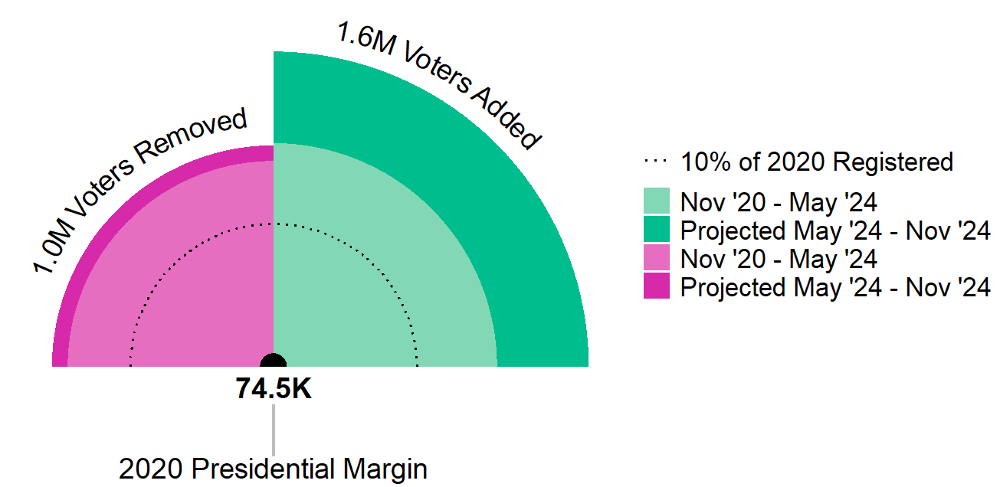
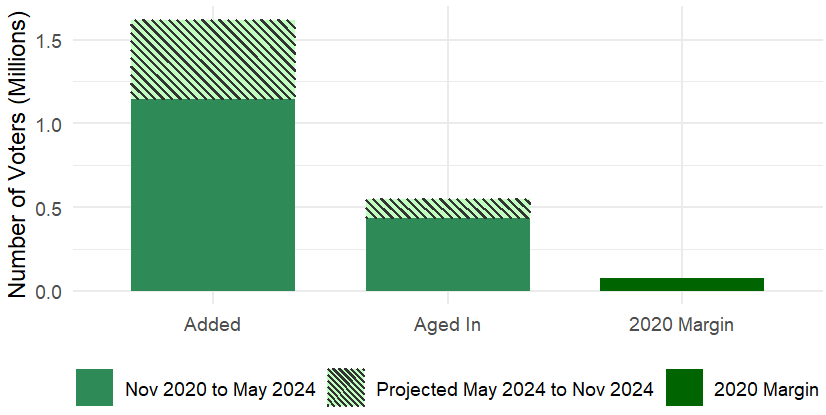

The Change Among Registered Voters from Nov '20 to Nov '24 Will Be Significant
- Chart inspired by Bloomberg's article on changing eligible voting population
- Data and projections are for the voters found in the North Carolina’s (NC’s) voter file
▶
Added Voters and "Aged In" Voters (18-21 Years Old) relative to the 2020 Presidential Margin
◀

Added Voter Breakdown for May 2024 and Last Three Presidential Cycles
▶
◀

Information about the removed electorate in NC since November 2020.
▶
◀

Interactive maps showing NC's electorate changes since November 2020.
▶
◀

Analysis of which party has the advantage in NC since November 2020.